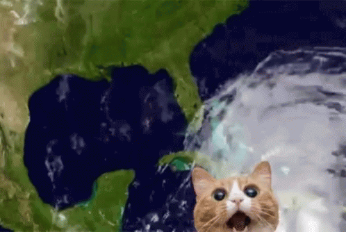

O GATO TORNADO
| Paises | Gatos Desaparecidos | Tornados na Região |
|---|---|---|
| Indonésia | 200 | 20 |
| Estados Unidos | 950 | 87 |
| Austrália | 350 | 28 |
Quando gatos desaparecem, tornados surgem!

| Paises | Gatos Desaparecidos | Tornados na Região |
|---|---|---|
| Indonésia | 200 | 20 |
| Estados Unidos | 950 | 87 |
| Austrália | 350 | 28 |